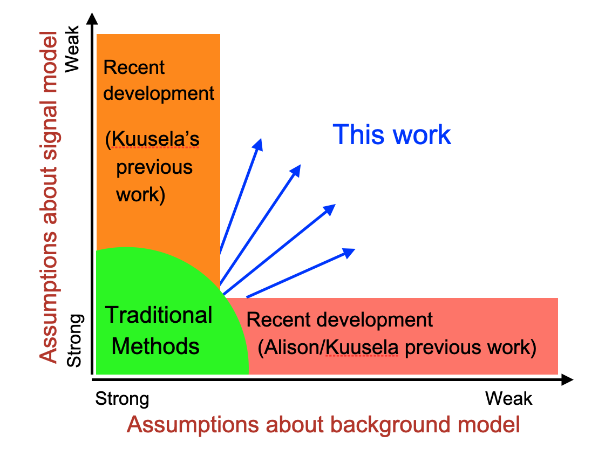

Stats-Data-Driven-SR
Links:
Data-driven SR Proposal for Jones Fund
Paper draft:
Review 15 October 2025 Wednesday
I think it woudl be good start explicitly include the "big-picture" figure in the introduction.

- Also maybe in the introdcution maybe want layout conceptually the data challenge in our generalized problem. In our fomulation the observed data can differe from the background model for two reasons, there is signal or the background is misspecified. Our work aims at teasing these two differences apart
Whats New:
- Using the classifier(s) for data-driven SR
- Anaylsis in the embedded space
- Ensambleing with max to amplifiy signal
- 2nd smeared classifier
Log
08 December 2025 Monday
- Looked at intro of new draft… much better!
- Chat re: Introduction of paper draft
20 October 2025 Monday
- Not much… ABCD as capture and release
15 October 2025 Wednesday
- Reviewed paper above
10 October 2025 Friday
- Not much
29 September 2025 Monday
- Paper draft solid. ZH results make sense
- Stamps on the 10th
15 September 2025 Monday
- Currently loose a factor of 2 with data: Maybe universal inference?
21 August 2025 Thursday
- [>] Read overleaf
- We learn the relevant variable. In high-D space
- Assume somethings about signal
- Generaized model agnositcs search of new physics in presense of imprerfect background model
14 August 2025 Thursday
- Going over paper draft
- Has results for X->hh->4b signals
- https://www.overleaf.com/project/688668ae400db8e684d5ff97
29 July 2025 Tuesday
- How to describe the benifit of the smearing
- Maybe come up with a 1D toy to explain the effect of smearing ?
10 July 2025 Thursday
- Soheun going through paper outline
- Will start drafting the paper
16 June 2025 Monday
- Not much
- Meet again on Friday
12 June 2025 Thursday
- Not much… mainly recap.
- Unbinned is bad idea.
15 May 2025 Thursday
- Chat about correct test statistic to use
- How to determine the corrections. Fit now in a SB, what prior to put on when fitting in the SR
08 May 2025 Thursday
Discussion of goodness-of-fit Background prediction much better when smearing
05 May 2025 Monday
- Discussed unbinned teststatistics
01 May 2025 Thursday
- On Zoom
- Soheun's claim is that the rejection rate depends on teh number of bins
17 April 2025 Thursday
- Question re: CR with bais, improvement from 1 bin vs 2bins ?
- Write up
- Effect of random binning on significance
10 April 2025 Thursday
- 2D plots clearly show benefit of smearing
- Try max(FvT) vs mean(FvT) max vs min gamma/gamma-tilde
- Claude desktop
- setup MCP for obsidian
3 April 2025 Thursday
- Useful meeting
- Smearing hurts power some, but improves bias
- Plot of FvTCR vs FvT for SR defined with different smearing definitions
27 March 2025 Thursday
- Discussed impact of smearing on quality of background modelling
20 March 2025 Thursday
- Discussion using gamma vs gamma/gamma tilde
- Will start looking into the other signals next
13 March 2025 Thursday
- [>>] Get more signal samples
20 February 2025 Thursday
- gamma/gamma-tilde look good
- Get other signal samples
13 February 2025 Thursday
- Discuss journal
4 February 2025 Tuesday
- Discussed the uncertainty on the predicted normalization
30 January 2025 Thursday
- Discussion about how to properly compute the null
23 January 2025 Thursday
- How to calculate pvalues with SvB
9 January 2025 Thursday
- Another background fit in the SR
19 December 2024 Thursday
- Soheun poster: 1hr,
- DARMA (Data-driven Algorithm for signal Region-based Model-Agnostic signals) ? ??
- Should we vary the kernel during the ensembling ?
- Complicates interpretations
- Use CLUE to show that smearing works
10 December 2024 Tuesday
- Reviewed the Ada write up
- Ensemblelling seems to work
5 December 2024 Thursday
- How to ensemble the latent space.
- not much else…
21 November 2024 Thursday
- How to ensamble gamma/~gamma
[BROKEN LINK: 11 November 2020]
- Discussion of Profile background in the SR
31 October 2024 Thursday
- Not much
- Discussion of calibrating the background prediction. eg: an Nuisance parameters to the bkg.
24 October 2024 Thursday
Very good discussion !
- Null looks OK
- With signal present we see that the background prediction is biased by CR signal contamination when fitting FvT using the original latent space (found by fitting SvB).
- When fitting the FvT from the original inputs the results look good.
- This suggests that impact of the signal contamination in the CR depends strongly on the latent space used in the FvT. (Swiss cheese vs Blue cheese). When using the original ("SvB") latent space the FvT sees the CR signal contamination as swiss cheese, and the signal contamination in the CR biases the background prediction in the SR. When the FvT latent space is re-derived using only events in the CR, the FvT now sees the CR signal contamination as blue cheese, and there is little (if any bias) on the background prediction in the SR.
17 October 2024 Thursday
- Going over the reviews accepted to Neurips
9 October 2024 Wednesday
- Long discussion re:training schedules (not so useful
- Discussion of unfolding:
- Claim (MK) only need a foward model trained on simulation/ this would then be insensitvie to simulation mismodelling
- think about this with 1d cartoon
2 October 2024 Wednesday
- Investigating FvT fitting in the CR. not much else
25 September 2024 Wednesday
- Not much.
- Confusion about SR defintion.
- Using 3 partitions of the dataset to do the analysis.
13 September 2024 Friday
- Bias in background sample… probably due to using same datasets for FvT and defining SR regions
- Probably problem of using the same dataset to define both classifiers.
28 August 2024 Wednesday
- Probably not worth doing PCA on latent spaces because downstream classifiers sees such different performance. (If it was just differences in projections, the classifier performance would be the same)
Discussed paper plan
Test
- Try sub-sample 3b as "4b", should see closure
- sub-sample 3b + systematic by hand shift, show robust against variation
- then 4b
- Check 2nd FvT modelling in the CR !
22 August 2024 Thursday
- Smearing data seems to work to find SR.
- Question: How will we interpret a null result ?
- Maybe better to smear input space ?
- Question: How to ensemble over latent space ?
- Seeing big variation in FvT from different random number seeds…
12 August 2024 Monday
- Smearing the 4b to get rid of the high frequency modes
- Smear the 6d input space.
- Not clear how to fix the smearing scale / can do a scan.
- Seems like good idea
- Looks like the clustering in rho / (distance to point with higher rho) also working
- Can probably use this to show that the smearing is working.
2 August 2024 Friday
- recap:
- tried high signal ratios
- Discussion re clustering algorithm.
- I pointed to : https://www.science.org/doi/10.1126/science.1242072 will try that
18 July 2024 Thursday
- Previous results OK
- Lots of review to get MK up to speed on what we are doing.
10 July 2024 Wednesday
- For Signal ration 0.05
- Study the FvT cut used for clustering.
- Looks like method works for signal fractions of 0.05, but does NOT work for signal fractions of 0.01.
- The UMAP seeing the signal events as unweighted (over sampling the signal)
- Question: Can UMAP be run on weighted events ?
202502231214